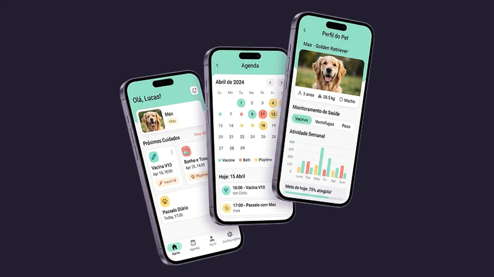

Patinha
Um app que reúne vacinas, banhos e passeios do pet em um só lugar e lembra o tutor na hora certa.

O desafio
Cuidar do pet sem precisar lembrar de tudo.
Tutores costumam controlar vacinas, consultas e cuidados em lugares diferentes: a carteirinha de papel, anotações no celular, mensagens no WhatsApp. É fácil esquecer um reforço de vacina ou perder a data do banho.
O desafio foi desenhar um app simples que reúna essa rotina em um só lugar e avise o tutor na hora certa.
Para quem
Tutores com a rotina corrida, que querem cuidar bem do pet sem depender da memória.
Objetivo
Ver em segundos o que precisa ser feito hoje e registrar um cuidado com poucos toques.
Pergunta-guia
“O que o tutor precisa saber agora?”
Essa pergunta ajudou a decidir o que entra em cada tela e, principalmente, o que fica de fora.
O processo
Da rotina real ao protótipo
- 01
Entendimento
Mapa da rotina de cuidados: o que acontece, com que frequência e quem lembra.
- 02
Arquitetura
Três áreas, cada uma respondendo a uma pergunta do tutor.
- 03
Wireframes
Fluxos de criar lembrete e registrar vacina com poucos toques.
- 04
Interface e protótipo
Telas finais com componentes reutilizáveis e protótipo navegável.
Arquitetura
Três telas, três perguntas
Início
O que preciso fazer hoje?
Próximos cuidados em cards, do mais urgente para o menos urgente.
Agenda
Quando é o próximo cuidado?
Calendário com uma cor por tipo de cuidado e a lista do dia logo abaixo.
Perfil do pet
Como meu pet está?
Idade, peso, vacinas e atividade da semana reunidos em uma tela.
Decisões de design
O que simplifica o dia do tutor
Hoje em primeiro lugar
A tela inicial mostra só os próximos cuidados, sem histórico nem configurações no caminho.
Cor por tipo de cuidado
Vacina, banho e passeio se diferenciam de longe, sempre acompanhados de ícone e texto.
Tudo do pet num perfil
Saúde, peso e atividade juntos, fáceis de mostrar ao veterinário na consulta.
Feito para uma mão
Botões grandes e menu na parte de baixo, ao alcance do polegar.
- Verde-menta
- Coral
- Amarelo-manteiga
Entregas
Telas, componentes e protótipo
- Mapa da rotina de cuidados
- Arquitetura de informação
- Wireframes
- Interface iOS e Android
- Componentes reutilizáveis
- Protótipo navegável
Aprendizados
Próximos passos
O próximo passo é testar o protótipo com tutores reais, para validar se os lembretes chegam na hora certa e se registrar uma vacina é mesmo rápido.
Os resultados desse teste guiariam a próxima versão, começando pelos fluxos que gerarem mais dúvida.
Tem uma ideia de app? Vamos tirar do papel.
Vamos conversar sobre o seu projeto.